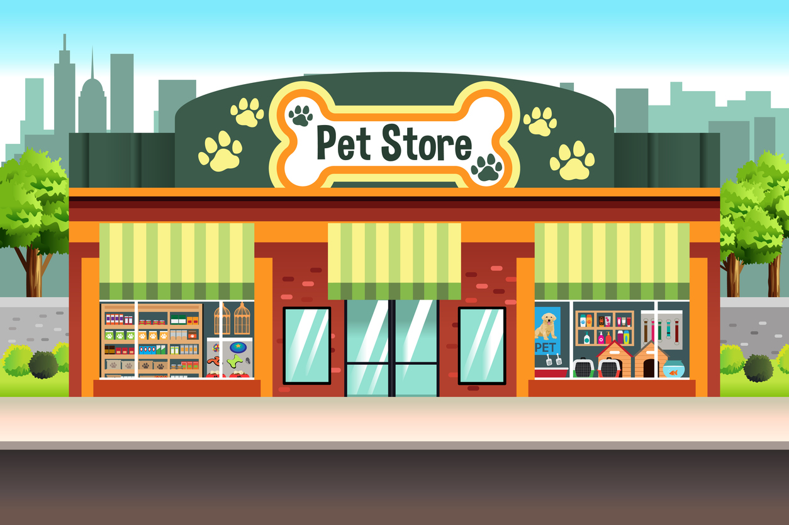
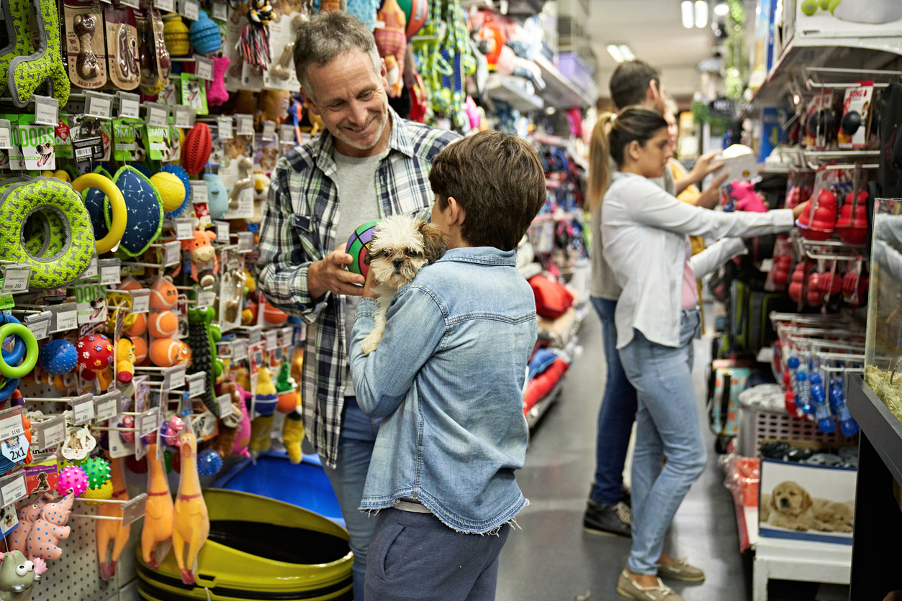
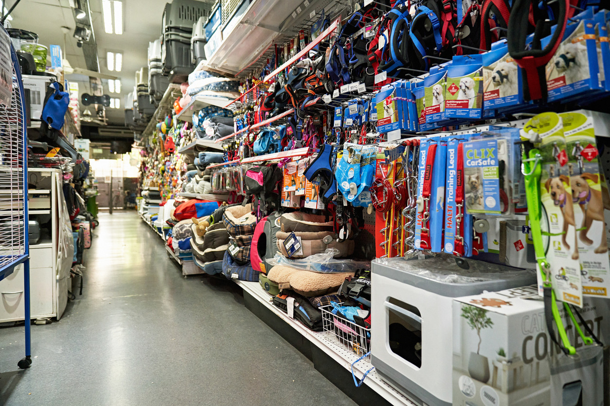

welcome to the world of opening a pet store
about opening a pet supplies store
There is so many things you have to do in order to start a pet supplies store. So many steps and recources youll need to have. Opening a pet store can include but is not limited to making a business plan, maybe going to college and getting a business degree, purchasing supplies, figuring out where you want it, if your gonna build from the ground up, purchace, or rent, rules and regulations, where your funds are gonna come from etc... There is so much that you need to think about when opening your own pet supplies store.

information on opening a pet store:
opening a pet supplies store
in a pet supplies store its good to decide whether you'll give the pets freedon to choose or run around or be leashed. You never really know if a pet is agressive or not so its definately a big decision to make. It could cause some major problems lawfully so make sure you have all the legal documentaion sorted out as well before starting a business.

pet store
Opening a pet store takes a lot of work, but there's more that goes into a pet store then just starting the pet store. you also have to think about the many things that make a pet store a pet store; like the pet supplies, the pets running around and having fun, the openness that a pet has to play, an area that is safe for them, a family oriented place to where family can come hang out and just chill with their pets while they're looking for their pet supplies, a place where they can come and get anything that they may need, the friendships and the family that you'll create within a pet store from the returning customers. all kinds of pets will be coming in and out big, small, dogs, cats, you might even get some birds. There's so much more that comes into creating a pet store and those things are what makes a pet store so special.
 Pets
Pets
pet supplies
When opening a pet store there are so many things to do in order to start a pet supply store. so many resources you'll need. some of the things that opening a pet store can include but is not limited to is making a business plan, going to college, getting a business degree, purchasing supplies, figuring out where you want it and how you want it, where you're going to get the funds for it, whether you're going to build it from the ground up, purchase it, or rent it out the rules, and regulations of owning a pet store. there's so many things you need to think about when opening up your own pet supply store. it could take a long time and a lot of resources, so definitely make sure it's something that you really want to do. Opening a pet supply store can be fun but it can also be very challenging. You also have to think what kind of pets you may sell, maybe fish? What kind of supplies are you going to get and sell? what organizations and businesses you're going to work with if any? It's definitely a lot to think about but never jump into anything unless you're 100% sure about it.

petstore